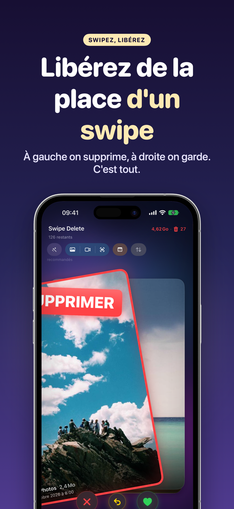
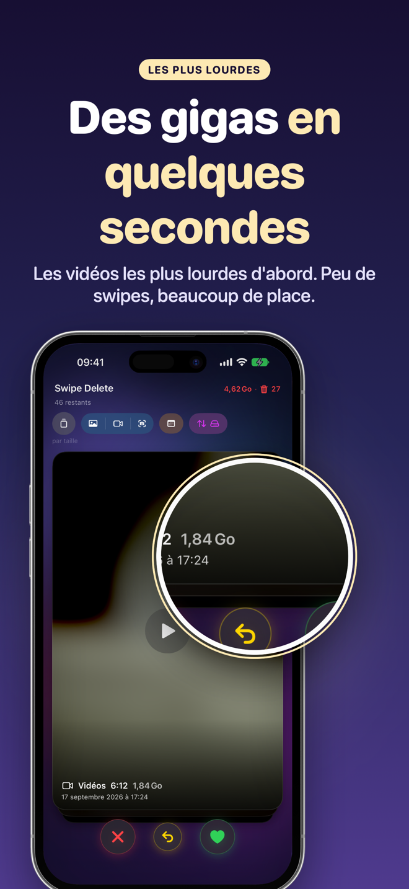
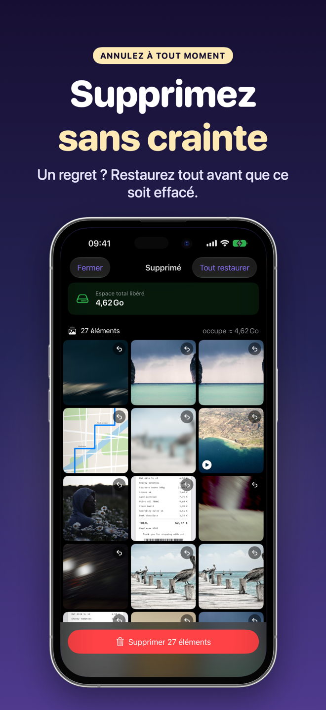
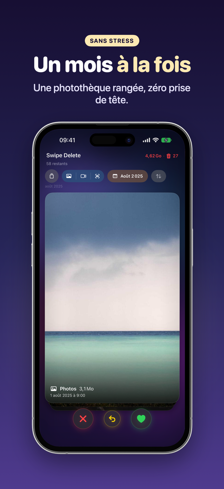
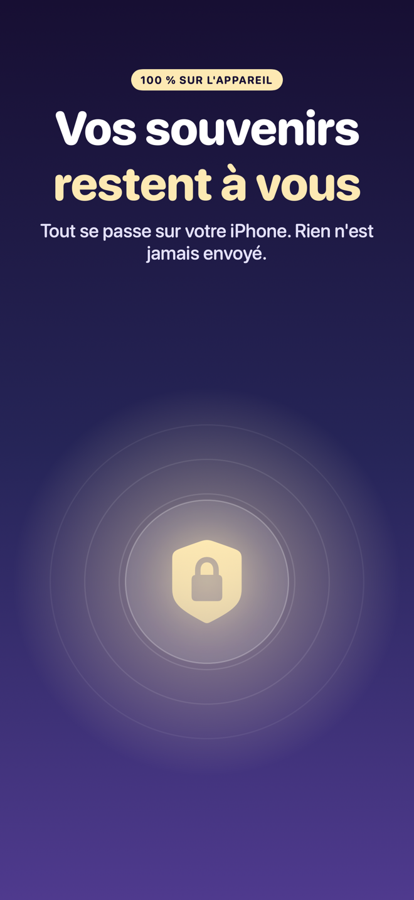
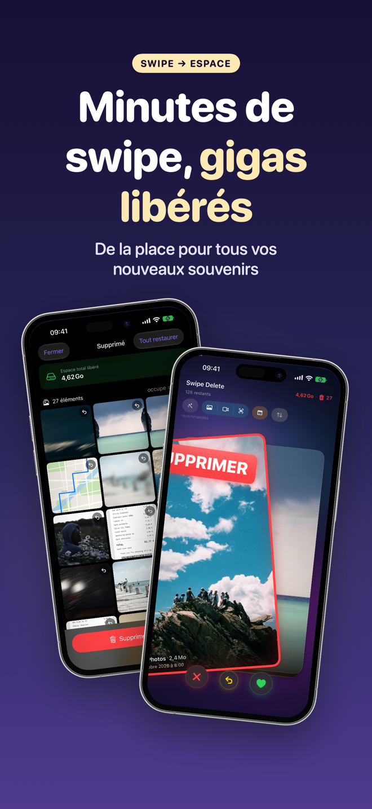
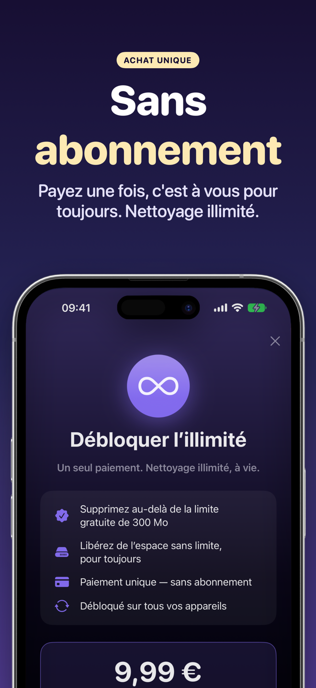

SwipeDelete · Nettoyer Photos
Nettoyage iPhone : triez vos photos d'un swipe et libérez de l'espace
Chaque photo ou vidéo devient une carte. Swipez à gauche pour supprimer, à droite pour garder. Récupérez des gigaoctets en quelques minutes, sans effort et sans stress.
Bientôt sur l'App Store100 % sur l'appareil · Corbeille intégrée · Achat unique, sans abonnement

Retrouvez un iPhone léger
Fini les heures passées à fouiller album après album. Vous commencez par les candidats les plus évidents, et vous gardez toujours le dernier mot.
Bientôt sur l'App Store- Suggestions intelligentesScreenshots, photos similaires, rafales et images ratées en tête de pile.
- Les plus lourds d'abordTriez par taille pour libérer un maximum d'espace.
- Supprimez sans crainteCorbeille intégrée, annulation et confirmation iOS.
- Vie privée par conceptionVos photos ne quittent jamais votre iPhone.
Le grand ménage devient un petit jeu
Un retour haptique à chaque swipe. Faites défiler pour tout voir →
À gauche on supprime, à droite on garde 
Les vidéos les plus lourdes d'abord 
Restaurez à tout moment 
Un mois à la fois 
100 % sur l'appareil 
Quelques minutes, des Go libérés 
Achat unique
Comment ça marche
Quatre étapes, aucune prise en main.
Autorisez l'accès à Photos
Ouvrez SwipeDelete et donnez accès à votre photothèque. L'analyse reste sur votre iPhone.
Choisissez par où commencer
Suggestions intelligentes, filtres Photos, Vidéos ou Screenshots, année ou mois, ou tri par taille.
Swipez
À gauche pour supprimer, à droite pour garder. Une erreur ? Annulez d'un tap.
Vérifiez et confirmez
Parcourez la corbeille en grille, restaurez ce que vous voulez, puis confirmez.
Guides pour libérer de l'espace
Guides pratiques, disponibles pour l'instant en anglais.
Libérer de l'espace sur iPhone
Guide en anglais.
Lire (EN) →Supprimer les doublons
Guide en anglais.
Lire (EN) →Supprimer les screenshots
Guide en anglais.
Lire (EN) →Supprimer les photos floues
Guide en anglais.
Lire (EN) →Trouver les vidéos lourdes
Guide en anglais.
Lire (EN) →Trier sa photothèque
Guide en anglais.
Lire (EN) →Supprimer beaucoup de photos
Guide en anglais.
Lire (EN) →Supprimer les rafales
Guide en anglais.
Lire (EN) →Questions fréquentes
Comment supprimer beaucoup de photos rapidement sur iPhone ?
Avec SwipeDelete, chaque photo ou vidéo devient une carte : swipez à gauche pour supprimer, à droite pour garder. Vous décidez en une seconde et pouvez annuler votre dernière décision à tout moment. En savoir plus (EN)
Puis-je récupérer une photo supprimée par erreur ?
Oui. Les photos swipées à gauche vont d'abord dans une corbeille intégrée : restaurez une photo ou videz tout d'un seul tap. iOS demande une dernière confirmation avant la suppression définitive. En savoir plus (EN)
Comment supprimer les screenshots et les photos en double ?
Les screenshots, photos similaires, rafales et images de faible qualité passent en tête de pile grâce aux suggestions intelligentes. Vous pouvez aussi filtrer uniquement les screenshots. En savoir plus (EN)
Comment libérer un maximum d'espace en un minimum de temps ?
Triez par taille : les fichiers les plus lourds d'abord, pour libérer un maximum d'espace en un minimum de swipes. En savoir plus (EN)
Mes photos sont-elles envoyées dans le cloud ?
Non. L'analyse utilise Apple Vision directement sur l'appareil : vos photos ne quittent jamais votre téléphone. Politique de confidentialité (EN)
SwipeDelete est-il un abonnement ?
Non. Vous pouvez libérer jusqu'à 300 Mo gratuitement ; un achat unique débloque l'usage illimité sur tous vos appareils Apple. Conditions d'utilisation (EN)
Swipez et retrouvez de la place
SwipeDelete arrive bientôt sur l'App Store.
Bientôt sur l'App Store